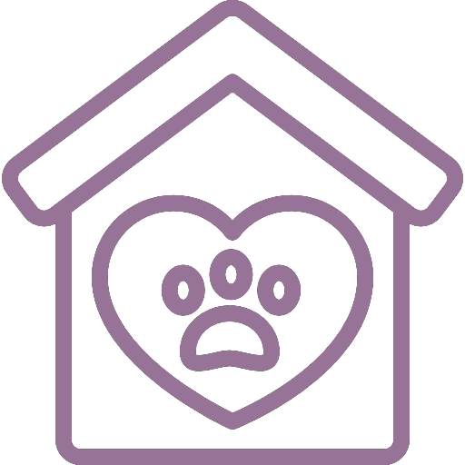

О нас
Добро пожаловать в наш приют для животных! Мы - команда энтузиастов, которая занимается спасением и восстановлением животных, оказавшихся бездомными. Наша миссия - найти для каждого питомца заботливую семью и дом, где он будет любим и уважаться.
Мы работаем на благо животных уже более 10 лет. За это время нам удалось помочь сотням питомцев найти своих любящих хозяев. Наша команда состоит из опытных волонтеров, ветеринаров и просто любителей животных, которые делятся своим временем и знаниями ради благополучия наших маленьких друзей.
Контакты:
Телефон: +7 (953) 645-94-63
Email: info@animal-shelter.ru
Адрес: г. Москва, ул. Приютская, д. 10
Как мы помогаем животным
Спасение и первая помощь
Наша команда активно занимается поиском и спасением бездомных животных. Мы обеспечиваем первую помощь, лечим травмы и заболевания, а также проводим необходимые вакцинации и стерилизацию.
Адаптация и восстановление
Животные, попавшие в приют, проходят период адаптации. Мы заботимся о них, обеспечиваем уход и создаем благоприятную среду для восстановления их физического и психологического здоровья.
Поиск новых домов
Мы активно работаем над тем, чтобы найти новые дома для наших питомцев. Проводим интервью с потенциальными хозяевами, организуем встречи с животными и следим за тем, как они чувствуют себя в новых семьях.
Образование и пропаганда
Команда приюта проводит образовательные мероприятия, направленные на повышение осведомленности о правах животных и пропаганду гуманного отношения к ним. Мы также помогаем в организации кормления бездомных животных на территориях, где это разрешено.
Отзывы
"Очень благодарна команде приюта за помощь в поиске нашего нового друга - котика Мурзика. Теперь он счастлив в нашей семье!"
"Приют делает поистине важную работу. Спасибо за заботу о бездомных животных и за то, что помогаете им найти дом."
"Пушок самый милый песик на свете!! 💗 Прижился к новому месту и хозяевам очень быстро. Спасибо вашему приюту за такого питомца"
"Команда приюта проделала огромную работу, спасая животных. Очень рекомендую всем, кто хочет приютить питомца, обратиться именно сюда."